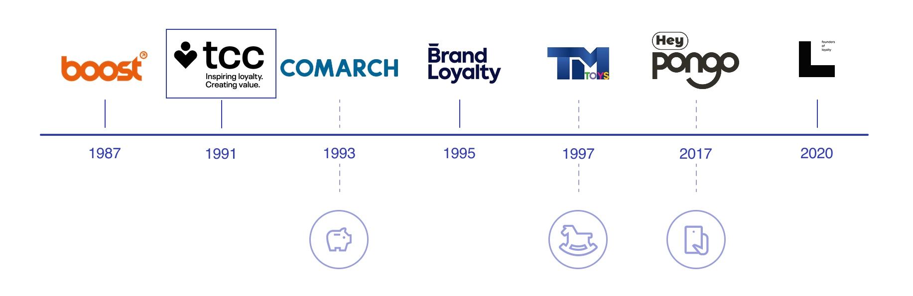

Market Analysis: Leading the Loyalty Industry
Working with TCC Global meant designing for a global giant ($204M revenue). The challenge was to maintain their core values : Respect, Care, Collaboration and Truth across massive retail networks.
+120 retail partners & 9500 programs globally.
Industry leader since 1991 in a highly competitive landscape.
Competitive Landscape
The loyalty market has evolved from pure "Physical Toys" (1990s) to "Digital Apps" (2020s). Landmark's goal was to position TCC at the forefront of this Phygital shift, competing with new digital-first players like Hey Pongo.

User Archetypes
Our research in supermarkets and local communities revealed four distinct profiles. Analyzing their core motivations allowed us to design a universally accessible loyalty experience.
THE OPPORTUNIST
"I have 15 loyalty apps. I only open them for big discounts, I don't care about the brand."
Have to anticipate and end up buying low-end products
THE EFFICIENT
"I hate loyalty cards. They slow down the checkout. Shopping should be fast."
Frustrated by the price of organic products and hate doing big shopping
THE SOCIAL
"I love my local store. I go there to chat with the staff and feel part of the neighborhood."
Not so much into digital products or complex programs
THE ESSENTIAL / WORKER
"Customer loyalty also depends on staff retention and corporate culture"
Not or little trained to inform the customer on products or loyalty programs
School Workshop: Dream vs. Nightmare Stores
To identify core retail friction points, we asked primary school students to draw their ideal and worst shopping experiences. These projective drawings revealed deep emotional insights.
THE NIGHTMARE STORE
THE DREAM STORE
NIGHTMARES : Children perceive supermarkets as scary, gray, and utilitarian "labyrinths" where they feel invisible and restricted.
DREAMS : They crave colorful, interactive, and community-driven spaces where shopping feels like a shared treasure hunt.
A Phygital Community Hub
Our vision is a phygital solution that transforms the point of sale. By integrating interactive checkpoints and collective missions, shopping becomes a treasure hunt that rewards eco-responsible or community engagement rather than just the total on the receipt.

Promotional Motion Render
The final stage involved translating this "Explore-to-Earn" loop into a high-energy motion design, showcasing how Landmark creates a lasting bond between the local store and its community.